.png)
 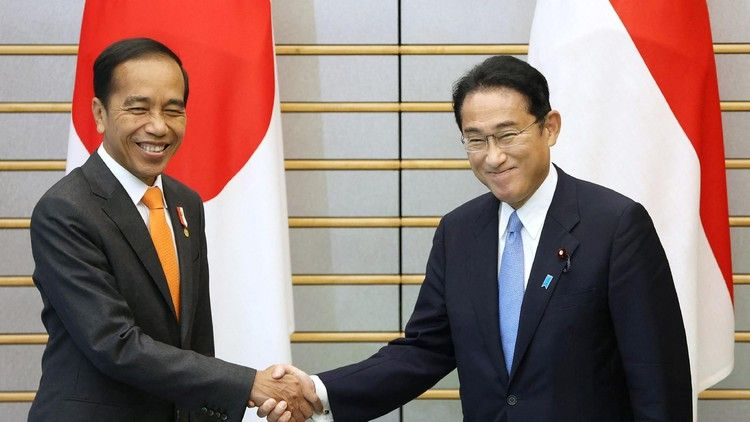
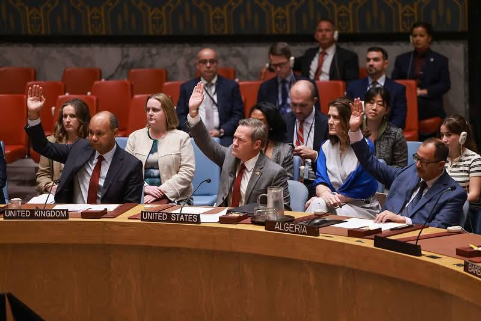
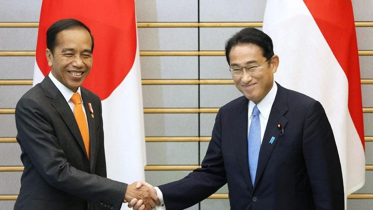
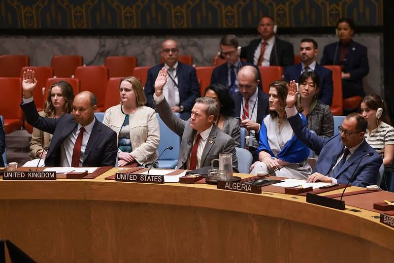
Selamat datang di website saya! Dalam website ini, saya akan mendalami dan membicarakan terkait Peran Indonesia dalam kerja sama internasional yang berhubungan dengan SDGs! Di tengah era globalisasi ini, Indonesia terus berperan aktif dalam upaya menciptakan dunia yang lebih baik. Seperti memperkuat hubungan dan meningkatkan kolaborasi dengan negara-negara lain, hingga menyuarakan kepentingan global di forum internasional. Indonesia menunjukkan kontribusi strategisnya dalam mendukung tercapainya tujuan pembangunan berkelanjutan (SDGs).
Kerja sama internasional adalah aspek penting untuk menghadapi tantangan global di berbagai bidang seperti pendidikan, kesehatan, hingga ekonomi. Dalam era global ini, tidak ada negara yang dapat menyelesaikan permasalahan global secara mandiri, sehingga diperlukan kolaborasi bersama untuk saling membantu dan melengkapi kekuatan dan kekurangan masing-masing. Melalui kerja sama bilateral, regional, hingga multilateral, Indonesia terus berperan aktif dalam upaya menciptakan dunia yang lebih baik.
SDGs (Sustainable Development Goals) atau Tujuan Pembangunan Berkelanjutan adalah agenda global yang disepakati oleh 193 negara anggota PBB, termasuk Indonesia, untuk dicapai pada tahun 2030. SDGs bertujuan untuk mengatasi berbagai tantangan dunia, seperti kemiskinan, kesenjangan, kerusakan lingkungan, hingga perdamaian dan keadilan. Program ini berfokus pada pembangunan yang adil, inklusif, dan berkelanjutan untuk generasi sekarang dan masa depan.
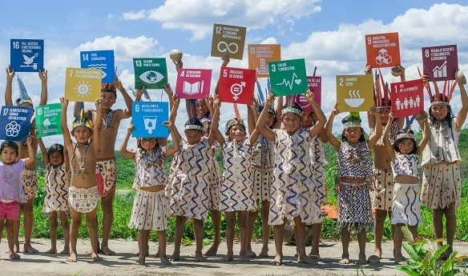Mengakhiri kemiskinan di semua bentuk dan di seluruh tempat.
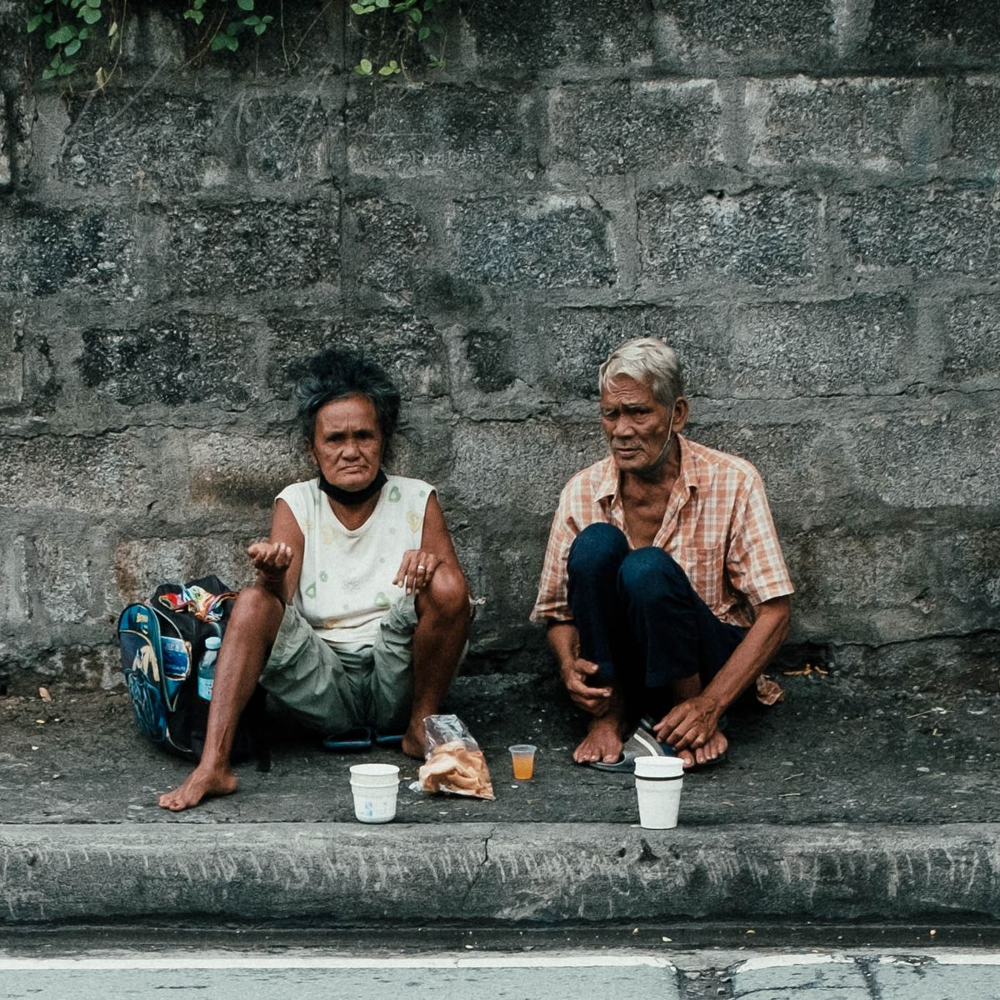Mengakhiri kelaparan dan meningkatkan ketahanan pangan.

Menjamin akses layanan kesehatan yang berkualitas.
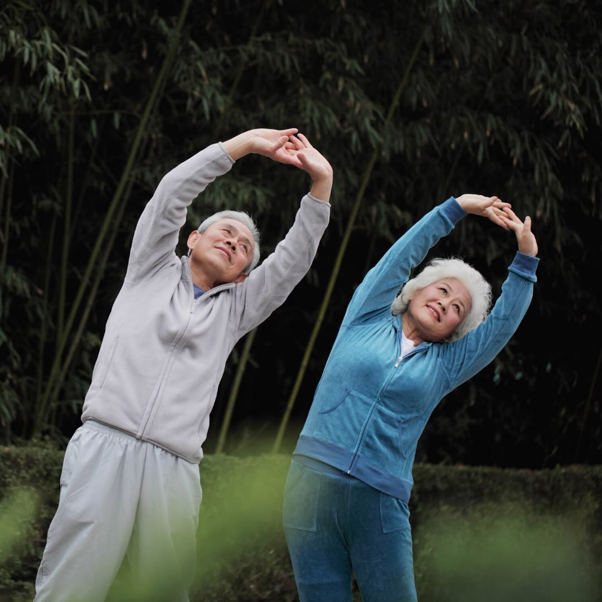Menyediakan pendidikan inklusif dan bermutu.

Meningkatkan kesetaraan hak bagi perempuan dan laki-laki.
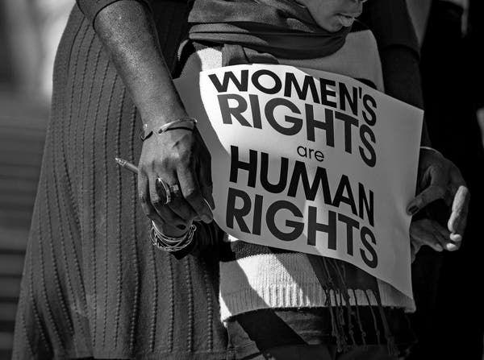Menjamin akses terhadap air minum dan sanitasi.
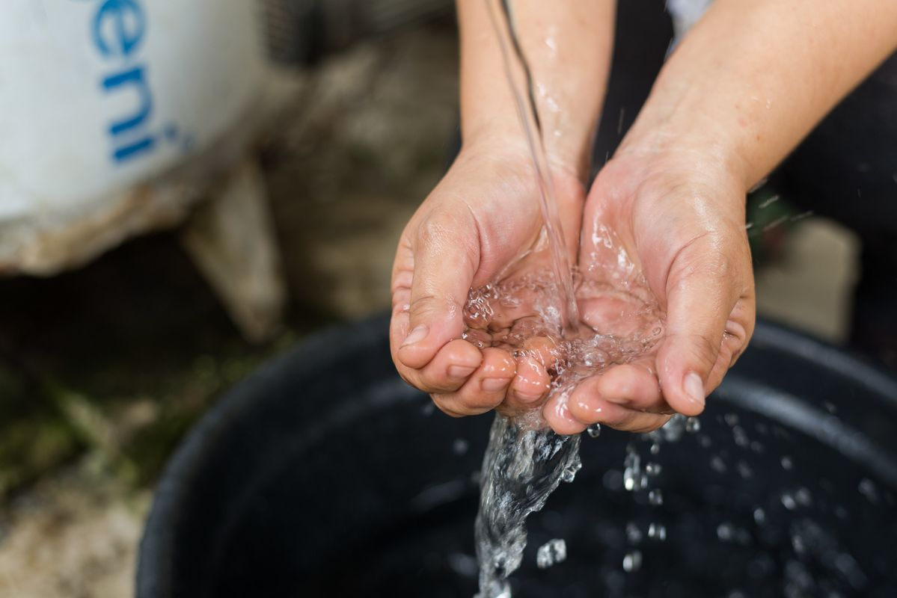Penyediaan energi ramah lingkungan dan mudah diakses.
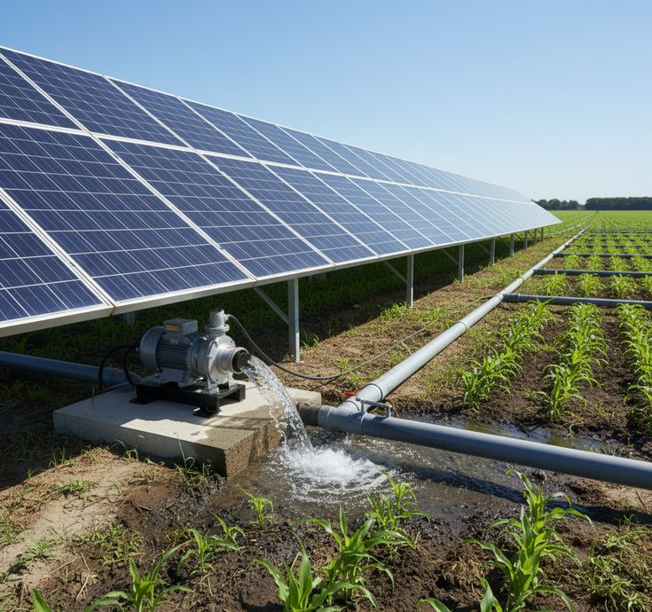Menciptakan lapangan kerja dan ekonomi yang berkelanjutan.
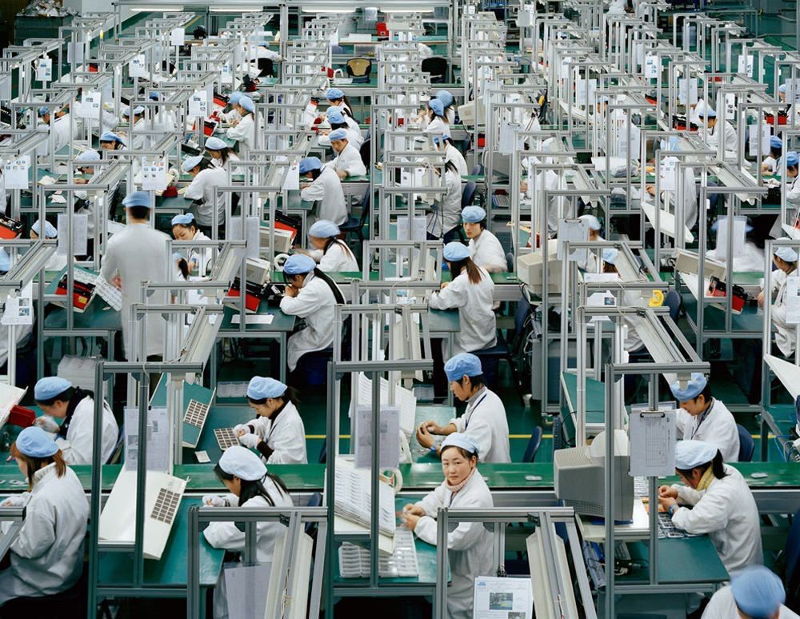Mengembangkan teknologi dan infrastruktur yang inovatif.

Mengurangi ketimpangan sosial dan ekonomi.
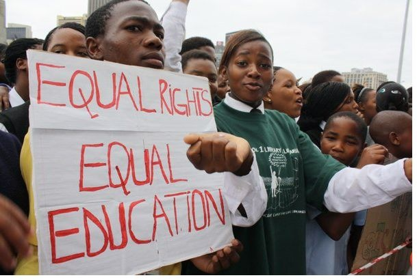Membangun kota yang aman, nyaman, dan ramah lingkungan.

Menggunakan sumber daya secara bijak dan berkelanjutan.
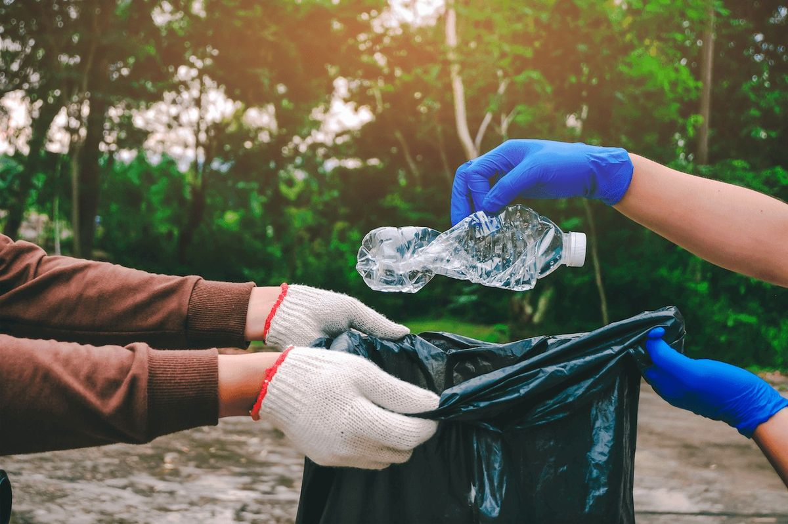Mengatasi dampak perubahan iklim.
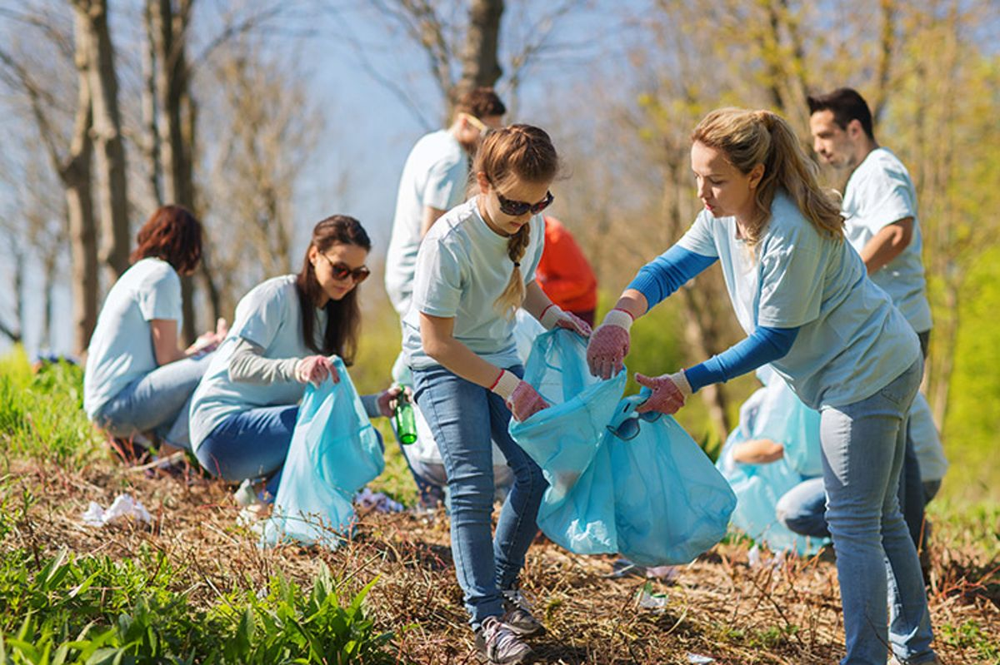Melindungi kehidupan laut dan sumber daya kelautan.
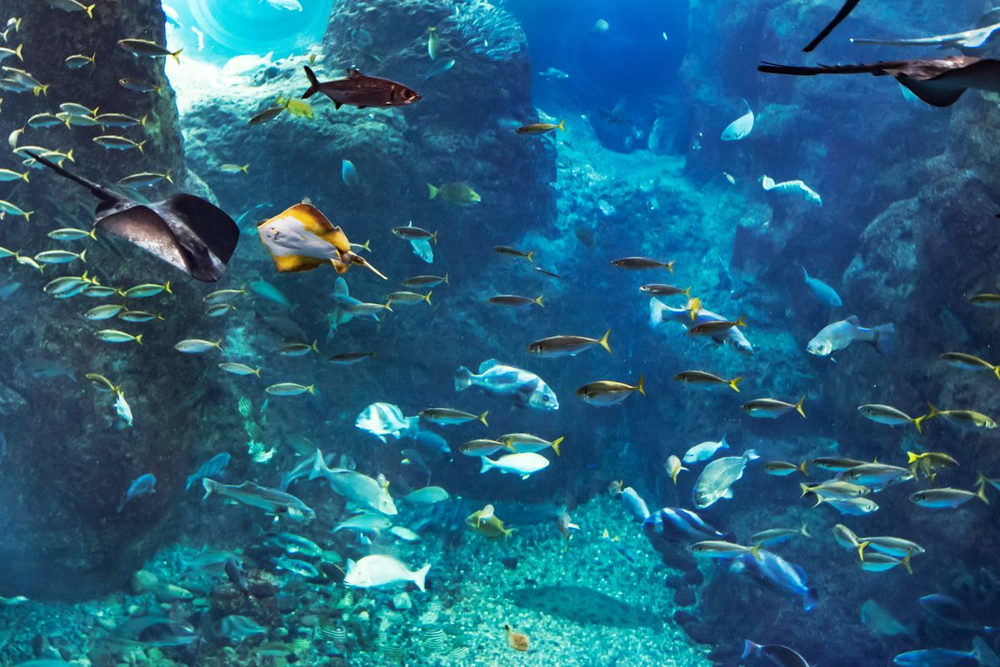Menjaga hutan, keanekaragaman hayati, dan lingkungan darat.
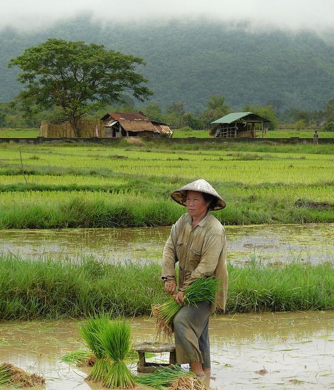Menegakkan hukum, keadilan, dan tata kelola pemerintahan yang baik.
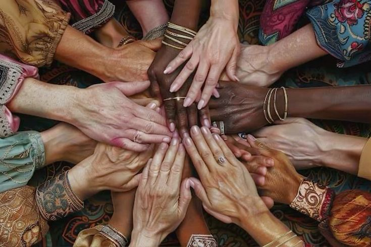Meningkatkan kerja sama global untuk mencapai setiap tujuan.

SDGs yang saya pilih adalah SDGs ke-16. Dimana SDGs ini membahas terkait Perdamaian, Keadilan, dan Kelembagaan yang Tangguh. SDG 16 bertujuan untuk mempromosikan masyarakat yang damai dan inklusif untuk pembangunan berkelanjutan, memberikan akses keadilan untuk semua, dan membangun institusi yang efektif, akuntabel, dan inklusif di semua tingkat. Ini berfokus pada pengurangan kekerasan, memastikan keadilan, dan memperkuat tata kelola serta institusi. Ada 10 target spesifik yang meliputi:
Pada saat ini, kondisi Indonesia masih menghadapi tantangan yang cukup signifikan, terutama dalam segi korupsi, penegakan hukum, dan ketimpangan ekonomi dan sosial. Selain itu, Menurut Human Rights Watch, setidaknya 11 orang tewas di Papua pada tahun 2015 akibat penggunaan kekuatan berlebihan oleh aparat penegak hukum/militer. Indonesia juga masih menghadapi masalah akuntabilitas sistem peradilannya. Pada tahun 2015, Indeks keadilan dunia hanya memberi sistem peradilan pidana di Indonesia skor 0,37, sedangkan sistem peradilan perdata mendapat skor 0,47 dari skala 0 sampai 1. Hal ini menunjukkan bahwa pemerintah Indonesia sedang berusaha memperbaiki sistem hukum agar setiap orang bisa mendapatkan keadilan dengan lebih mudah dan adil. Pemerintah Indonesia telah melakukan pembaruan regulasi serta memperkuat lembaga peradilan agar lebih mandiri. Seperti adanya penerapan prinsip independensi hakim dan penguatan mahkamah agung. Selain itu, munculnya digitalisasi sistem peradilan seiring berkembangnya teknologi membuat mekanisme peradilan lebih cepat, transparan, dan biaya yang berkurang. Negara berupaya untuk memastikan bahwa kelompok masyarakat yang rentan mendapat perlakuan khusus dalam proses peradilan.
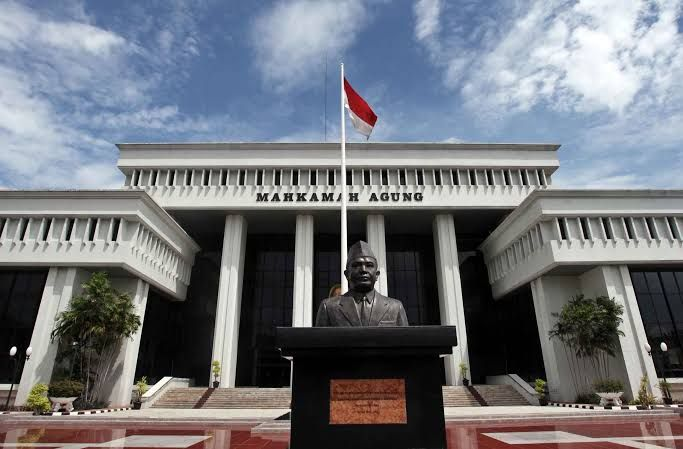Tantangan dan hambatan yang saat ini menghambat Indonesia dalam mencapai SDGs ke-16 meliputi banyak hal. Seperti terjadinya korupsi dengan tingkat yang tinggi, yang terjadi karena keputusan yang dipengaruhi oleh uang dan bukan kebenaran akan mengarah pada fakta bahwa banyak warga yang ragu bahwa hukum dapat memberi keadilan. Seperti terjadinya korupsi di sektor ekonomi yang menyebabkan anggaran negara tidak sampai ke masyarakat dan memperlambat pembangunan negara. Penegakan hukum yang belum sepenuhnya adil dengan akses keadilan yang belum merata akan menghambat pemerataan kesejahteraan. Selain itu, masih sering ditemukan konflik sosial seperti intoleransi, hoaks, dan konflik antar kelompok yang dapat mengganggu stabilitas sosial. Munculnya ketimpangan ekonomi yang mendorong meningkatnya kejahatan seperti pencurian, penipuan, dan tindakan kriminalitas lainnya dapat memengaruhi terjadinya ketidakadilan. Budaya nepotisme masih terjadi di beberapa daerah dan lembaga dan hal ini sangat berdampak pada keadilan negara secara tidak dipandang secara adil tetapi melalui koneksi dan relasi. Terutama dengan lemahnya pengawasan lembaga publik, sehingga akuntabilitas tidak maksimal. Juga, tidak stabilnya kebijakan hukum karena sering berganti kepemimpinan secara mendadak.
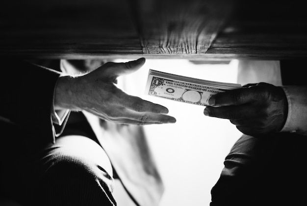Indonesia memiliki berbagai potensi dan peluang besar untuk mencapai Tujuan SDGs 16 tentang keadilan, perdamaian, dan kelembagaan yang kuat. Indonesia memiliki jumlah penduduk produktif yang tinggi, juga banyak generasi muda yang aktif dalam gerakan antikorupsi, literasi hukum, dan transparansi publik. Hal ini dapat menjadi peluang untuk menciptakan agen perubahan melalui pendidikan karakter dan literasi digital. Seiring berjalannya era digital, munculnya teknologi seperti e-court, e-procurement, dan transparansi data publik, e-berperkara, portal putusan pengadilan terbuka yang membantu mempercepat proses dan mekanisme hukum, mengurangi birokrasi, dan meningkatkan transparansi. Indonesia juga memiliki peluang besar melalui kerja sama internasional. Dengan bekerja sama dengan negara lain, Indonesia juga aktif bekerja sama dengan ASEAN, PBB, UNDP, dan lembaga internasional lainnya untuk reformasi hukum dan antikorupsi. Selain itu, lembaga dalam negara seperti KPK dan Komnas HAM memiliki potensi strategis untuk memperkuat sistem keadilan melalui pengawasan, penegakan hukum, dan perlindungan hak warga negara.
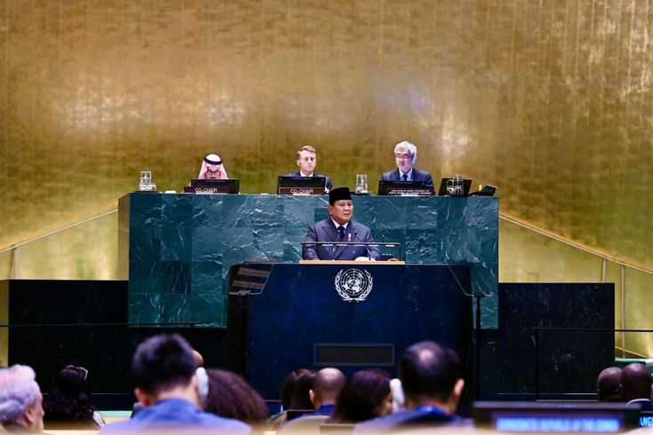Masyarakat Indonesia dapat berperan aktif dalam mencapai Tujuan Pembangunan Berkelanjutan (SDGs) ke-16 melalui partisipasi inklusif, seperti menjadi konsumen yang bertanggung jawab, meningkatkan kesadaran lingkungan, mendukung proyek berkelanjutan, dan berpartisipasi dalam advokasi dan pengawasan. Tindakan nyatanya seperti mengawasi proyek pemerintah, mengadvokasi isu kesetaraan gender, serta mendukung pendidikan anti-kekerasan. Tindakan mengadvokasi kebijakan dapat mempromosikan perdamaian, keadilan, dan kelembagaan yang kuat. Mengawasi pelaksanaan proyek-proyek pembangunan berkelanjutan dan melaporkan penyimpangan dapat membantu mendorong keadilan terutama bagi masyarakat rentan. Selain itu, dengan melaporkan praktik mencurigakan, mengawasi pengelolaan keuangan publik, bergabung dengan komunitas antikorupsi kita dapat mempromosikan nilai-nilai integritas sejak dini. Di lingkungan keluarga, budaya taat peraturan atau hukum dapat ditanamkan sejak dini dengan memberi contoh perilaku disiplin, menghargai hak orang lain, dan menyelesaikan masalah secara adil tanpa kekerasan. Sedangkan di sekolah, pelajar dapat menerapkan nilai keadilan melalui kejujuran dalam tindakan seperti tidak menyontek. Penggunaan sosial media dapat menjadi sarana untuk meningkatkan transparansi seperti menyebarkan informasi edukatif tentang anti korupsi dan mendukung kampanye sosial yang mendorong keadilan. Dengan keterlibatan aktif dari seluruh masyarakat, keadilan dan pemerintah yang bersih dapat terwujud secara lebih cepat dan efektif.
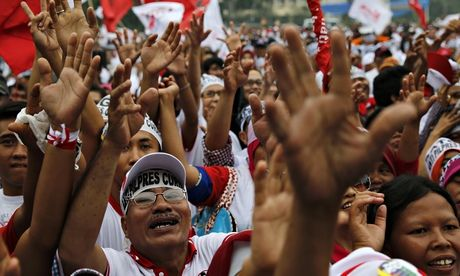Berdasarkan nilai Serviam integritas, kita dapat meningkatkan keadilan di Indonesia dengan pemerintah yang dapat memperkuat kebijakan transparansi dan perlindungan hukum seperti:
Selain itu, beberapa solusi yang dapat dilakukan secara bertahap di masyarakat sekitar kita terutama sebagai murid adalah dengan:
Kerja Sama Internasional membangun hubungan yang kuat dengan mitra internasional dalam berbagai bidang, termasuk pendidikan, penelitian, dan pengembangan teknologi.
Kerja sama bilateral adalah hubungan kolaborasi langsung antara Indonesia dan satu negara mitra. Kerja sama ini membantu memperkuat sistem keadilan, keamanan, dan pemerintahan. Contohnya:
Kolaborasi di bidang penegakan hukum memperkuat akses keadilan (bahwa aparat Indonesia bisa bekerja sama dengan mitra untuk menyelesaikan kasus transnasional), dan ini langsung terkait dengan target SDG 16 tentang keadilan dan institusi yang kuat. Serta meningkatkan profesionalitas aparat, kapasitas hukum, dan akses pendidikan hukum modern.
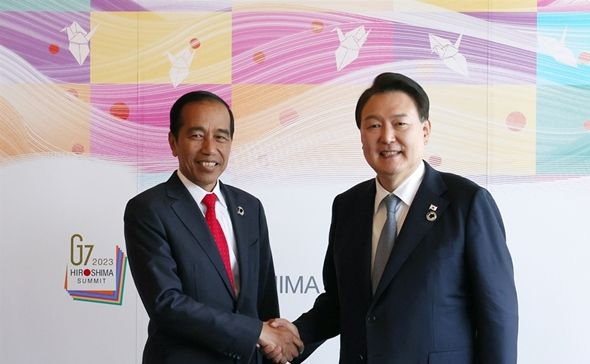Kerja sama regional berfokus pada isu bersama dalam satu kawasan. Seperti kerja sama antar-negara dalam kawasan Asia Tenggara dengan tujuan untuk menjaga perdamaian dan stabilitas. Contohnya:
Mekanisme regional memungkinkan pertukaran dan pelatihan lintas negara bagi aparat penegak hukum, serta standar regional yang memfasilitasi lembaga negara menjadi lebih transparan. Kerja sama secara regional juga dapat memperkuat kelembagaan melalui standar dan kerangka kerja regional yang mendukung “institusi yang efektif, akuntabel dan inklusif di semua tingkat” yang merupakan sasaran dari SDGs ke-16. Kerja sama secara regional juga dapat memperkuat perdamaian regional, keamanan regional, perlindungan hak asasi, dan memperkuat sistem hukum antar negara, sehingga menciptakan lingkungan yang kondusif untuk keadilan.
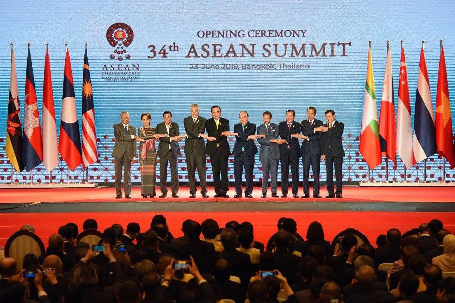Kerja sama antara banyak negara dalam wadah organisasi internasional. Kerja sama multilateral melibatkan banyak negara dan organisasi internasional (seperti PBB, UNDP, dan lembaga pembangunan global) dalam kerangka yang lebih luas. Contoh:
Melalui kemitraan multilateral, Indonesia juga dapat mengakses bantuan teknis, kapasitas pembangunan kelembagaan, dukungan keuangan dan partisipasi dalam standar internasional anti korupsi dan pemerintahan baik. Serta untuk menghindari korupsi global, membangun pemerintahan transparan, dan memperkuat lembaga hukum.
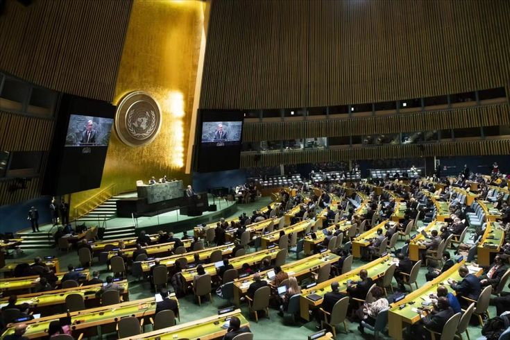Halo! Nama saya Deedra Georgette Sumirat dari kelas 92 dan menurut saya isu global dan pembangunan berkelanjutan sangat berdampak untuk kita semua. Saya percaya bahwa setiap individu, termasuk generasi muda, memiliki peran penting dalam mewujudkan Sustainable Development Goals (SDGs). Melalui pembelajaran dan berbagai kegiatan sekolah, saya berusaha memahami bagaimana kerja sama internasional, pendidikan, dan aksi lingkungan dapat membantu menciptakan dunia yang lebih baik. Saya ingin terus belajar, berkontribusi, dan menjadi bagian dari generasi yang mendorong perubahan positif demi masa depan yang berkelanjutan.
Sebagai pelajar, saya menyadari bahwa SDGs 16 tentang perdamaian, keadilan, dan kelembagaan yang kuat sangat penting untuk menciptakan negara yang aman dan bebas dari korupsi. Kerja sama internasional baik bilateral, regional, maupun multilateral dapat membantu Indonesia belajar dan bekerja sama dengan negara lain untuk memperkuat hukum, menjaga perdamaian, dan melindungi hak asasi manusia.
Saya telah mempelajari bahwa Indonesia berperan penting dan aktif dalam ajang internasional terutama dalam mencapai tujuan Sustainable Development Goals (SDGs). Sebagai negara yang berkembang, Indonesia terlibat secara aktif dalam forum internasional seperti G20 dan PBB untuk membahas isu-isu global, dan mencapai tujuan. Dengan adanya web ini, saya berharap agar para pembaca dapat lebih memahami dan mendalami terkait kerja sama internasional yang beragam serta tujuan-tujuan SDGs. Terutama untuk SDGs yang ke-16 ini yang memiliki dampak dan efek bagi kita semua. Dengan mendalami terkait kerja sama dalam bidang bilateral, regional, dan multilateral, saya berharap agar kolaborasi yang strategis ini dapat mengubah dan memengaruhi usaha dalam mencapai tujuan SDGs ke-16 yaitu “Perdamaian, Keadilan, dan Lembaga yang Kuat”.
Peran saya sebagai pelajar dimulai dari hal kecil seperti bersikap jujur, menghargai perbedaan, menolak kekerasan, dan mendukung transparansi. Dengan membangun karakter yang baik sejak sekarang, saya dapat berkontribusi pada masa depan Indonesia yang lebih adil dan damai. Saya juga dapat ikut terlibat dalam kegiatan sekolah dan komunitas yang mendorong kerja sama, demokrasi, serta kepedulian sosial. Meski kontribusi saya mungkin terlihat sederhana, setiap langkah kecil dapat membawa perubahan besar ketika dilakukan bersama-sama. Melalui kesadaran dan tindakan nyata, saya percaya generasi muda mampu menjadi agen perubahan untuk terwujudnya SDGs 16.
.png)
.png)
.png)
.png)
.png)
.png)


.png)
.png)
.png)
.png)